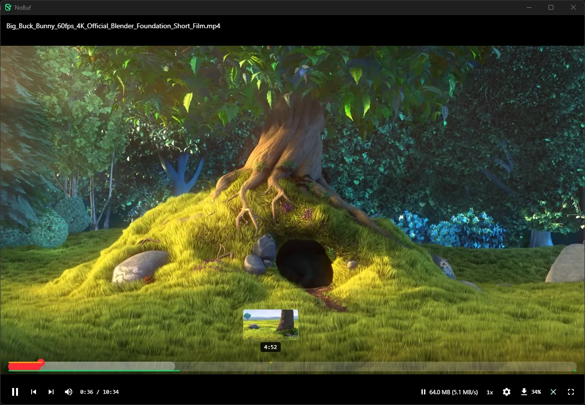
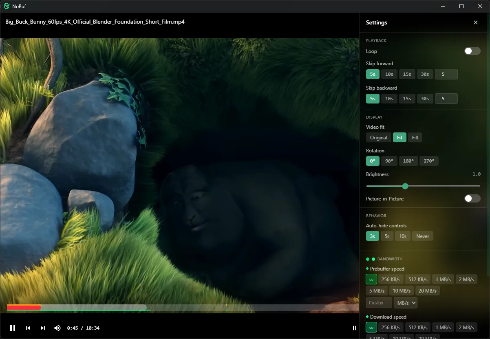
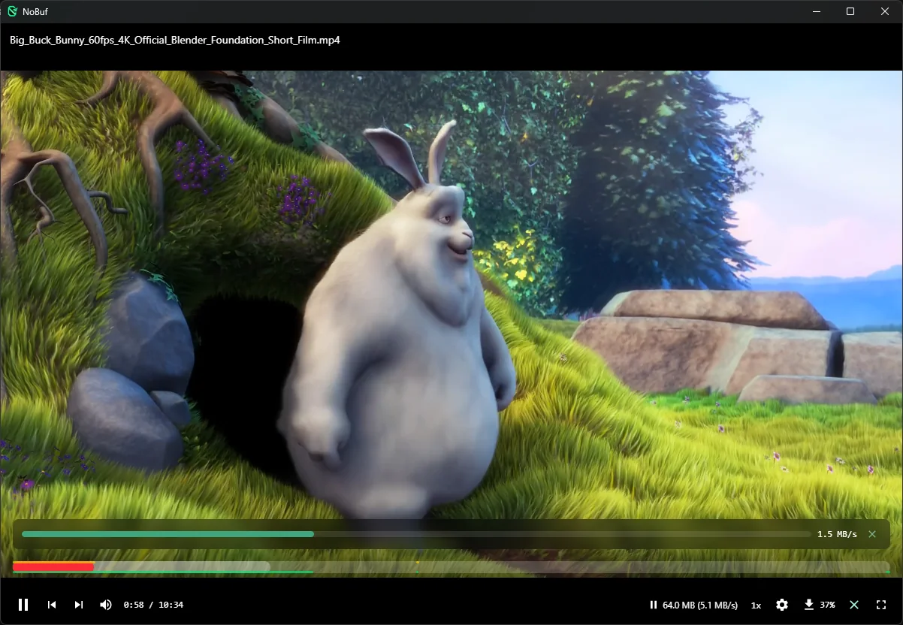
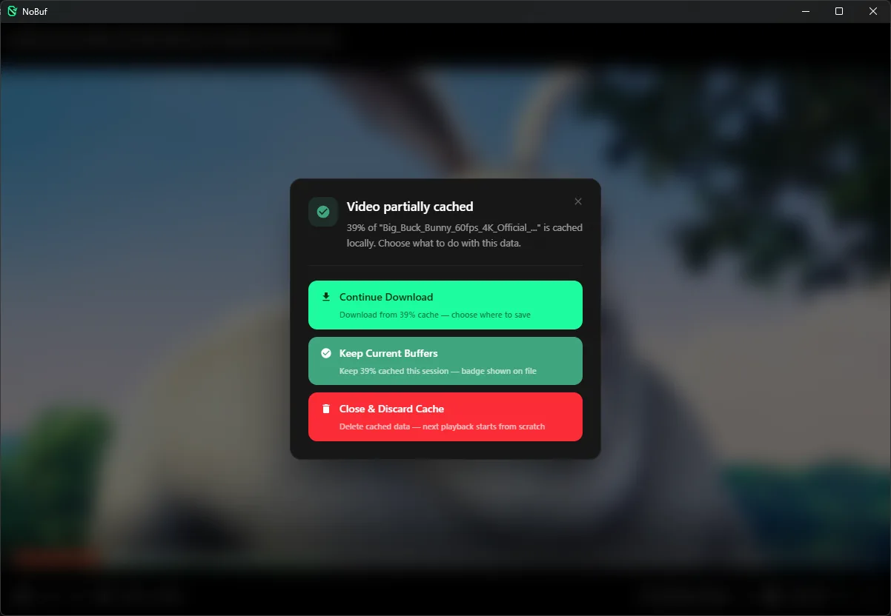
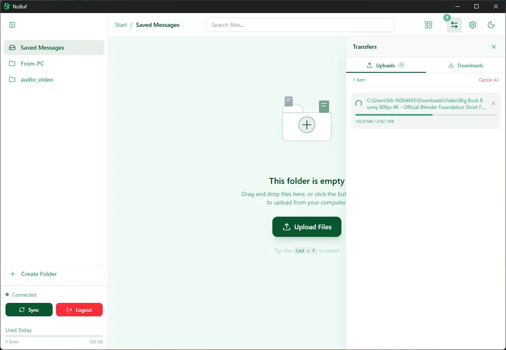

The seek engine
Keyframe indexes grow as files arrive. Cue-less MKVs get cluster bisection, so far jumps land in seconds. Scrub anywhere: frame previews follow your cursor.
v1.0 · Free & open source · Auto-updating · Windows / macOS / Linux
NoBuf streams video straight from your channels. Press play and it plays, MKVs included, with no download-first wait. Your files stay in your own Telegram.
v1.0.0 · $0 · local-first · auto-updates · no telemetry

You already keep movies and courses in Telegram channels. But watch one and you're downloading gigabytes first, or re-downloading them on another machine tomorrow. NoBuf deletes the wait without moving your files anywhere.
Telegram is a great vault. It was never a cinema. NoBuf keeps everything where it is and adds the missing half.
Every color on NoBuf's player bar means something. No fake progress, no guessing what's buffered — hover each layer below.
Layer 01
White — buffered in memory Ranges decoded into RAM right now. Hover the bar and watch them hug your playhead.Layer 02
Green — cached to disk The glowing strip along the bottom edge. Seek into it and playback starts instantly.Layer 03
Yellow — previews ready The strip along the top edge. A frame preview follows your cursor before you commit.Layer 04
Red — your playhead Where you are right now. Drag anywhere; NoBuf fetches and plays from that exact spot.Keyframe indexes grow as files arrive. Cue-less MKVs get cluster bisection, so far jumps land in seconds. Scrub anywhere: frame previews follow your cursor.
HEVC, 10-bit, HDR, odd containers: NoBuf detects what your machine plays and remuxes or hardware-transcodes the rest.
Embedded SRT and ASS render with bundled fonts. Size, position and sync sliders. OpenSubtitles search included.
Playback starts instantly while the rest of the file quietly downloads ahead of your playhead, so rewinds are instant.
The two questions every movie hoarder asks first. Both answered.

Honest footnote: image-based subtitle formats like PGS aren't supported yet; text formats are.
Real screenshots, not renders.

01 · live cache

02 · close dialog

03 · transfers
One login you already have, one scan, done.
Grab the installer for your platform from GitHub Releases.
The built-in wizard opens my.telegram.org, fills the app-creation form for you, then QR-scans you in.
You log in to my.telegram.org once yourself. Keys are stored locally and never sent anywhere but Telegram.
Rename a channel with [NB] or paste a public channel link, and your library appears ready to play.
Need details? Download page walks through first-run completely.
Free, open source, and it never moves your files.